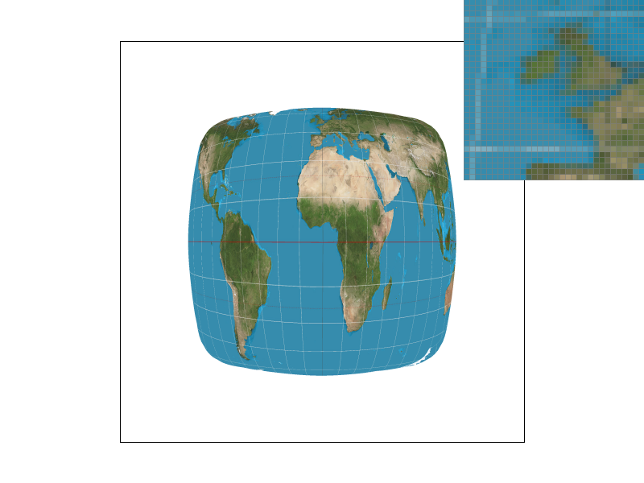
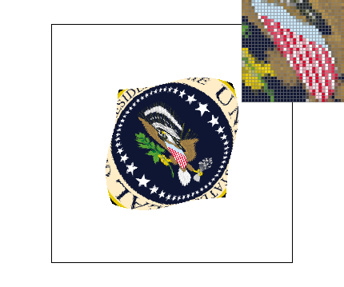

Overview
In this homework assignment, we modified an existing rasterizer code to support triangle rendering, supersampling, and texture mapping. In the first part, we prepare the code for rasterizing monocolor triangles. We support antialiasing using supersampling, which helps reduce the visual artifacts. In the second part, we implement sampling support for both interpolated colors and textures. In the third, we write code to support hierarchical affine transformations. In the fourth, we implement barycentric interpolation. In the fifth, we implement texture map sampling for both nearest pixel and bilinear interpolation. In the sixth, we implement level sampling of texture maps via mipmaps, with support for both nearest level and bilinear interpolation. Overall, this assignment gives a robust overview of the different sampling methods that enter at different stages of the rasterization pipeline. In addition, we probe the interplay between various sampling methods, and the resultant tradeoffs in computational time, memory, and aesthetic quality. We find that supersampling typically yields the aesthetically best results, since it is the closest to averaging over a pixel regardless of the underlying data (color, texture, etc.). It is indifferent to the structure of the data, but has the drawback of being among the more expensive sampling methods, requiring a scalar multiple of the original amount of work. For texture maps, bilinear interpolation is very important for smoothness at low sampling rates and level sampling can be a much cheaper method of achieving an effect similar to supersampling. However, neither of these methods produces as aesthetically pleasing results as the method of supersampling.
Section I: Rasterization
Part 1: Rasterizing single-color triangles

|
The original approach for rasterizing each triangle was as follows: we first checked if the given points defining the triangle are given in counterclockwise order—if not then we swapped the first and last point. Then we determined the circumscribed rectangle using the extrema of the triangle’s x and y coordinates. We further optimized the bounding box by restricting it to the view frame. This would be relevant if the triangle had one or more vertices off the screen. For every pixel inside the bounding box, we checked if that point was inside the triangle using three line tests. If it was inside the triangle, we then set the corresponding sample buffer pixel to be the given color. We revised the approach to simply compute the barycentric coordinates of each point in the bounding box. This circumvents the need to reorder the vertices, as the barycentric coordinates are independent of winding order. Note that we do not handle the edge case of a degenerate triangle (three colinear points), where the formula for computing the barycentric coordinates diverges.
To handle the case of triangle edges, we always include a sample that falls on the boundary. This would register as one or two of the barycentric coordinates of the point vanishing, and we choose to color the pixel (i.e., we say that such a point does lie inside the triangle). A resulting edge case is if two triangles share an edge. In that case, we overwrite the frame buffer with the second plotted triangle. This does not follow the OpenGL rules, but ensures that all edges will be colored.
Part 2: Antialiasing triangles

|

|

|

|
To prepare the code for supersampling support, we multiply the size of the sample buffer by the sample rate. This corresponds to each pixel having a sample rate-sized block in the sample buffer. The main algorithm for writing to the sample buffer is similar, however instead of iterating for every frame pixel in the bounding box, we iterate over every sample pixel. This is accomplished by multiplying the given x and y-coordinates by the square root of the sample rate. Then we write into the sample buffer. We modify the resolve_to_framebuffer function to support supersampling by mapping each frame pixel to the top-leftmost sample pixel of its corresponding supersample block. Then, for each frame pixel, we iterate through the rest of the supersample block and average the colors of all the sample pixels in the supersample block.
We later revised the original approach, which iterated over each pixel and sub-iterated over each sample within the pixel to simply iterate over each supersample as though they were the original pixels. This improved spatial locality in writing to the sample buffer. In addition, we tightened the bounding box by restricting it to the supersamples within the bounding box rather than the pixels within the bounding box. Note that we wrote the supersampling algorithm such that the case of one sample coincides with the original rasterization scheme of Part 1. In this way, we have a single algorithm for both parts.
Supersampling is useful as it is an approximation of the box filter (box convolution), which is the average color over the pixel area. In turn, the box filter is useful as it amounts to a low pass filter in the frequency domain, eliminating high frequency components that lead to aliasing. Intuitively, we can think of supersampling as blurring the original one-sample image to eliminate artifacts caused by sharp boundaries and fast variation. From the figures included, we see that the jagged edges (particularly in the pink skinny triangle) are smoothed by the antialiasing algorithm, leading to a more visually pleasing result. The zoomed-in highlight demonstrates how the blur achieves this effect by including intermediate colors and avoiding sharp transitions from full color to nothing.
Part 3: Transforms

|
We pose two cubepeople next to each other in poses that spell out “CS” using semaphore flag code. This code is used by sailors in order to transmit an alphanumeric signal with two flags held in their left and right hands. The right cubeperson signals C by holding their right flag up and out, and their left flag down. The left cubeperson signals S by holding their right flag directly out and their left flag down and out.
Section II: Sampling
Part 4: Barycentric coordinates

|

|
Barycentric coordinates define a point in space using the three vertices of a triangle. One interpretation is as follows: given a point inside the triangle, we can connect that point to each of the vertices creating three sub-triangles. The barycentric coordinate of that point is defined by the proportional area of each sub-triangle. In particular, each of the three barycentric coordinates correspond to a vertex and equivalently the sub-triangle that is not composed by that vertex. In the image of the triangle above, we can interpret this definition using colors. At any given point, the ratio of the three sub-triangles is equivalent to the ratio of red, green, and blue that defines the color of that point. In addition, all colors in the triangle have the property that the sum of the red, green, and blue components is 255 (assuming the traditional discretization). For example, all colors along the edge opposite to the blue vertex are zero percent blue, but vary in ratio between red and green. Barycentric coordinates are also well-defined for points outside of the triangle, where at least one coordinate is negative.
We use this final property of barycentric coordinates in the computation of our inside the triangle function. Rather than performing the three line tests, we simply compute the barycentric coordinates. This amounts to essentially the same amount of computation, as the line tests are nearly the same as the barycentric coordinate calculations, but this presents two benefits. First, we can neglect winding order, as the barycentric coordinate calculation is independent of winding order. Second, we can use the barycentric coordinates immediately for sampling in both Parts 4 and 5. An edge case that we stumbled upon was that when we wrote the line tests and barycentric coordinate calculations, the results may not agree exactly. In one case, we found that the line tests registered a point on the line, while the barycentric coordinate computed a small (1e-9) negative value. The consequence was that when we were using the line test for our inside the triangle test, a point passed, while one barycentric coordinate was slightly negative. Ultimately, this led to an exception in the texture mapping, where we attempted to sample a negative texel. For consistency, we moved to using the barycentric coordinates for both testing if a point lies within a triangle and for computation, as they could never disagree if we use the same data.
Part 5: "Pixel sampling" for texture mapping
Pixel sampling is the process of going from the continuous coordinates in texture space associated with a point in pixel space to a color. To explain this process, we start with a sample point in pixel space, (x,y). If it is inside the triangle, we use the barycentric interpolation to compute properties at the point. One such property is that vertices of the triangle will have associated coordinates in the texture space. Then, we can interpolate the texture coordinates associated with (x,y) by barycentric interpolation, as in Part 4, to get texture coordinates (u,v). These will be continuous coordinates on (0,1) x (0,1) under our convention, but the texture map will only consist of an array of colors, corresponding to equally spaced positions on this grid. Therefore, to get a color at (u,v), we must determine a color from the discrete grid.
The first option is nearest texel, where the texels are the texture colors in the texture map. In this method, we simply choose the nearest texel to our point (u,v). To do so, we can simply round each coordinate to the nearest coordinate in texel space. The drawback is that this method is discontinuous when we cross the midline between points. This will lead to aliasing due to a sharp boundary (infinite frequency variation). An approach that reduces aliasing is to perform bilinear interpolation. In this method, we determine the square in which (u,v) lies in the texel space and take the linear combination of the color values at the four neighboring texels. Note that we ensure that the algorithm chooses four valid texels if the point lies on the boundary between texels (this is of particular importance if we lie on the boundary of the entire texture map).
To compare the methods, we used both methods at two sampling rates, one sample per pixel and sixteen samples per pixel. The results for one sample per pixel are shown below for the texmap test 1 at resolution 800x600. We see that the bilinear pixel sampling greatly outperforms the nearest pixel sampling. In both, the latitude and longitude lines look disconnected, but on the whole, the bilinear interpolation produces smoother lines. The insert (zoomed in by the British Isles) shows that with bilinear interpolation, gradients are diminished and there is a continuous change between colors. However, we are still undersampling as there remain gaps.
|
|
|
Next, we show the same results for sixteen samples per pixel. In both the image looks significantly better than with one sample per pixel, as the latitude and longitude lines look almost perfectly continuous and there is little visible aliasing. However, from the insert, we can see that the bilinear pixel sampling does slightly better, with the latitude line looking a much more uniform color than in the nearest pixel sampling. An explanation for this is that performing the interpolation ensures that when a pixel moves across the midline between two texels, it will change color in a continuous manner, unlike in the nearest pixel case where jumps will be visible. However, due to the supersampling, this benefit is minimized, as the supersamples serve to help make the transitions appear more continuous as well.
|

|
|
In this example, we see that the supersampling without bilinear interpolation of the texture performs much better than the bilinear interpolation of the texture without supersampling. An explanation is that with supersampling, we are incorporating information from 16 points, as opposed to only 4 points in the bilinear interpolation. Bilinear interpolation of the texture will be more important where the texture map itself is rapidly varying from texel to texel. In this case, we need to transition smoothly between texels when points in pixel space are moving. On the other hand, if the texture map is very smoothly varying, then bilinear interpolation will not be as useful, since the four texels will likely all have fairly similar colors. Supersampling will be important when our pixels are undersampling the texel space. This will be the case when consecutive pixels in pixel space are far apart in texel space. Therefore, we will need additional supersamples to effectively sample the texture space between the pixels. This is also the same condition for using a mipmap, which makes sense, as a mipmap effectively moves the supersampling operation to sampling the appropriate level of mipmap.
Part 6: "Level sampling" with mipmaps for texture mapping
Another contributor to aliasing can arise from texture mapping. If the sample points in the pixel space are spaced far apart when mapped to the texture space, then colors will be drawn from single samples in a high frequency region of the texture map. The consequence of this will be aliasing due to the high frequency in the underlying texture map. For example, if we have a quickly varying texture and sample it far apart, we will accidentally create a new signal. Accordingly, we need to filter the texture space, which amounts to spatially convoluting over the region in the texel space corresponding to each sample. An efficient way to do this is to a priori perform the filtering in a logarithmic fashion. This will require log(N) levels of texture maps, each having a factor of 4 less information, meaning the total space will only be a factor of 4/3 more than the original texture map. This structure is called a mipmap. Then, for each sample in pixel space, we use the level of the mipmap that approximates the texture space occupied by the sample’s corresponding area in pixel space. As an example, if moving to the next sample in pixel space moves to a point 4 texels away in texture space, then we should use the 2nd level of the mipmap to filter over the 4x4 texel domain corresponding to the sample.
The three approaches used here for level sampling are, first to use the level zero texture map (no mipmap usage–naively sampling from the original texture map), second to use the nearest level of the mipmap, and third to linearly interpolate between the two appropriate levels of the mipmap. The first approach suffers from the aliasing described above. The second approach introduces a new aliasing effect, in which there are discrete jumps in the level of mipmap, and such a discontinuity will introduce its own aliasing artifacts. The third approach has the least aliasing, due to continuously transitioning between levels of the mipmap, leading to a smoother representation of the texture map.
To compute the appropriate mipmap, we used the provided formula of approximating how many texels over we move if we perturb the input to the next sample in either orthogonal direction and conservatively using the larger of the two values. To do so, we computed the discrete derivative by moving forward to the next super sample. Therefore, we would use a lower level mipmap if we have a higher sampling rate, which makes sense, since we do not need to blur over as much area. In addition, we compute coordinates in (u, v) space between 0 and 1 rather than as a number of texels. Accordingly, we needed to add factors for the width and height of the texture space in texels. This was based on the lowest level of the mipmap, such that if moving 1 sample over in pixel space moved the point in texture space by 1 texel, we would compute level 0 as the appropriate mipmap.
The picture we tested on was the presidential seal of the United States (from Wikimedia Commons) at a resolution of 1200x1200. We used the base svg from Test 6 and found the following results at a frame display of 430x359.
What we see is that in the letters of the seal, both level zero sampling techniques give visible jagged edges. In the bilinear sampling case, the image is slightly smoother at boundaries between colors but still suffers from undersampling. A good example of this is the radiating golden lines behind the eagle’s head. In both images, it appears like random dots of yellow on the blue background.
|
|
|
We see drastically decreased jagged edges in the level sampling at the cost of increased blurs when compared to the level zero sampling. The letters no longer have rough boundaries, but instead have blurry edges. In general, the entire image appears slightly blurred. Comparing the radiating lines again, we see now that the yellow is drastically less visible, but when looking closely, we can see the suggestions of yellow lines which were absent from the level zero sampling.
|

|
|
In addition, in all four images, we highlighted the eagle’s shield. In the level zero sampling with nearest pixel sampling, the shield is a collection of red and white. In the level zero with bilinear pixel sampling, it appears slightly smoothed out and the structure of lines are visible but still jagged. Then, with nearest level sampling, the shield is blurred too much, to the point where it has significant pink on the interior. Finally, in the bilinear level sampling case, the shield has pink but the red and white stripes are clearly visible. Looking at the shields only from the perspective of the overall picture, our belief is that the bilinear level sampling technique gives the most aesthetically pleasing result.
While not shown here, we also tested the code by varying all three sampling techniques simultaneously. In general, we found that supersampling had the most positive impact on the aesthetic quality of a picture. This makes sense, as it is also the most expensive to implement, since it requires a factor of the sample rate more work (which is itself quadratic in the free parameter, number of samples per a single dimension). Next, we found that for most pictures, bilinear pixel sampling provided the next most benefit. This requires 4 evaluations instead of 1 in the texture map, and is similar in spirit to the first level of supersampling, which showed similar performance. This also is a relatively high cost. Finally, we found that level sampling was generally the least effective and introduced more blur than other methods. This is perhaps unsurprising, since it is the cheapest method. It requires a factor of 4/3 more storage for the texture and some amortized cost at the beginning in computing the entire mipmap structure, but at runtime, has limited additional cost. For each sample, two additional points must have their barycentric coordinates computed to estimate the derivatives and the level must be computed. In nearest level sampling, no additional sampling work is required, while in bilinear level sampling, one additional texture map evaluation is required. This approach is cost-effective, but we believed showed the least benefit. However, when combined with the other approaches, it could make images look very smooth and certainly did provide benefits beyond the other methods alone.